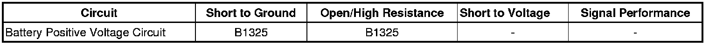

B1325
DTC B1325
Diagnostic Instructions
* Perform the Diagnostic System Check - Vehicle (Initial Inspection and Diagnostic Overview) prior to using this diagnostic procedure.
* Review Strategy Based Diagnosis (Initial Inspection and Diagnostic Overview) for an overview of the diagnostic approach.
* Diagnostic Procedure Instructions (Initial Inspection and Diagnostic Overview)provides an overview of each diagnostic category.
DTC Descriptors
DTC B1325 03
- Device Power 1 Circuit Voltage Below Threshold
DTC B1325 07
- Device Power 1 Circuit Voltage Above Threshold
DTC B1325 4A
- Device Power 1 Circuit Checksum Error
Diagnostic Fault Information

Circuit/System Description
The control modules on this vehicle monitor the battery voltage through the battery positive voltage circuits. This vehicle has multiple modules that will set the DTC. For more information on which modules, refer to Diagnostic Trouble Code (DTC) List - Vehicle (Diagnostic Trouble Code Descriptions) .
Conditions for Running the DTC
* The voltages supplied to the control modules are in the range of 7-26 volts.
* The ignition is ON.
* The engine is running.
Conditions for Setting the DTC
B1325 03
The control module detects a system voltage below the calibrated value usually 9 volts for at least 5 seconds.
B1325 07
The control module detects a system voltage above the calibrated value usually 18 volts for at least 5 seconds.
B1325 4A
The control module performs an internal test and detects a system voltage concern.
Action Taken When the DTC Sets
* The control module immediately disables all outputs when an out of range voltage condition has been detected, with the exception of GMLAN and Run/Crank relay that are disabled after a 3 minute delay.
* The setting of other DTCs is inhibited.
Conditions for Clearing the DTC
The DTC clears when the malfunction is no longer present.
Reference Information
Schematic Reference
Control Module References (Programming and Relearning)
Connector End View Reference
Component Connector End Views (Connector Views)
Description and Operation
Charging System Description and Operation (Description and Operation)
Electrical Information Reference
* Circuit Testing (Component Tests and General Diagnostics)
* Connector Repairs (Component Tests and General Diagnostics)
* Testing for Intermittent Conditions and Poor Connections (Component Tests and General Diagnostics)
* Wiring Repairs (Component Tests and General Diagnostics)
Scan Tool Reference
Control Module References (Programming and Relearning)for scan tool information
Diagnostic Aids
* A possible cause of this DTC could be overcharging with a battery charger or jump starting.
* A high voltage value in multiple modules indicates a concern in the charging system.
Circuit/System Verification
Ignition ON and engine running, observe the scan tool Battery Positive Voltage parameter in the data list of the module setting the DTC. The reading should be between 9-18 volts.
Circuit/System Testing
1. If the DTC is history refer to Charging System Test (Charging System Test) .
2. Ignition On and the engine running, test for 9.5-17.5 volts between the battery positive voltage and the ground circuits of the affected module.
• If not within the specified range test the B+ circuits for a short to ground or an open/high resistance, and the ground circuits for a open/high resistance.
3. If all the circuits test normal, test or replace the affected module.
Repair Instructions
Perform the Diagnostic Repair Verification (Verification Tests) after completing the diagnostic procedure.
Control Module References (Programming and Relearning)for the affected module replacement, setup, and programming.